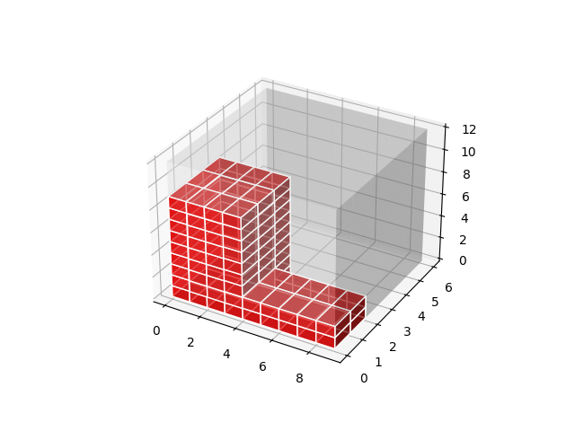
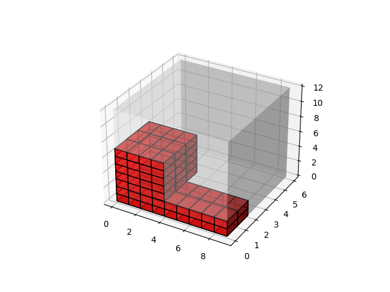

What kind of algorithm should I use?
I decided that best fit could take far too long with larger inputs, and the
opposite of best fit is inefficient. I landed on a first fit algorithm, that
would evaluate subsections of the larger bin to place the current smaller bin
into.
How to evaluate the three dimensional space?
Working in three dimensions can be difficult. I settled on a coordinate system
which would start at one corner of the object (0, 0, 0) at the bottom left
corner for example. Then, using the dimensions of the bins, I would be able to
calculate position as well as determining orientation.
How will "used" space be noted?
All boxes are object, and if a smaller box is placed inside of a larger bin,
it's attributes will be updated to denote that. This includes its position
inside of the larger bin, and the larger bin will be updated to show that it
contains the smaller bin.
How will the output be visualized?
The project did not require a visual output, so I could have settled with a
two dimensional or simple terminal output. However, I thought it would be a
better idea to integrate Matplotlib functionality to see what the filled bins
would look like.
Matplotlib Issue
While integrating Matplotlib, I ran into an issue where a small box placed
within a larger bin had open space under it, the visualization would fill
in this space. The issue was a simple OR instead of an XOR. Once I used an
XOR, the issue was resolved and images were correctly displayed. The image
left image below shows the issue. The image on the right is the correct output.

